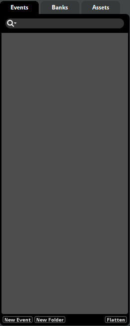
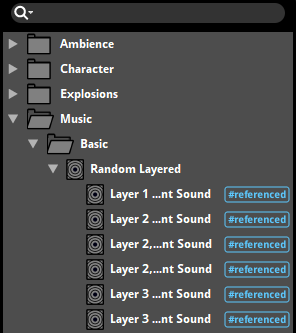
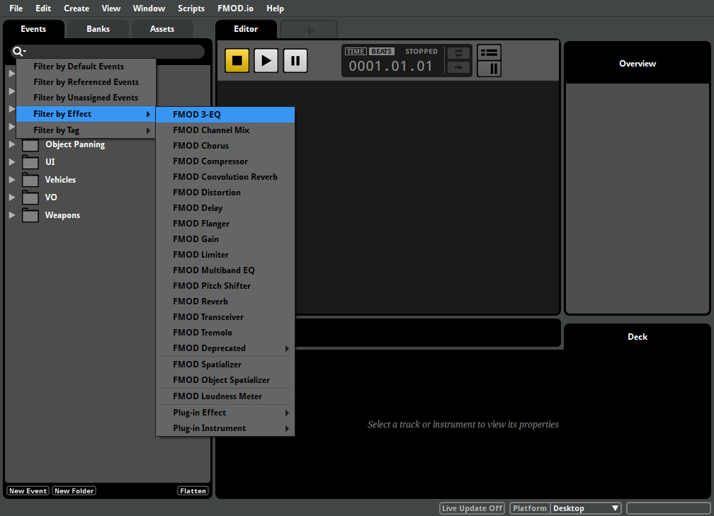
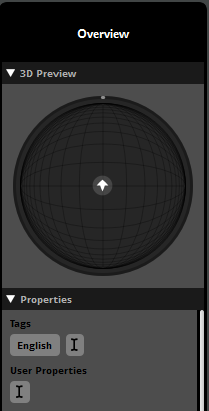

FMOD Studio User Manual 1.10
The main building blocks of an FMOD Studio project are events.
Events are important because of how flexible they are. You can have a simple 2D event that loops for music, and another event that changes its output on the fly. The parameters of an event can trigger new sounds, or even alter or reroute audio signals, giving a very real and dynamic feel to your game.
Events are the fundamental units of sound design in FMOD Studio, and most of your time spent working with FMOD Studio will be in the event editor window.
The event editor window is the first window that opens when FMOD Studio is run. This window contains a variety of features and tools for creating, editing and organizing events.
There are three browsers that can appear in an event editor window: the events browser, the banks browser, and the assets browser. Only one of these can be displayed at a time. You can change which browser is displayed by clicking on the tabs at the top of the browser.
You are able to organize your project to work best with your workflow in these browsers.

You can hide all folders and show only the items in the current browser on a single level by clicking on the "Flatten" button. This is useful for searching for items without showing the folders that they reside in.
You can drag a project element from any browser over another browser's tab, and FMOD Studio will switch to that browser.
The events browser displays your project's events and event folders. It allows you to create, assign and organize events.
To create an event in this browser, right click on an empty space and select "New Event". This opens a sub-menu, in which you have the option to make a 3D Event, a 2D Event, or a default event.
3D events include the spatializer effect on the master track and are set to the current platform's channel format by default. 2D events do not include any effects by default and is set to "Automatic" output, taking the channel format from the content placed in the event. For more information, please see the channel formats section of the Mixing chapter.
You can make templates of events called defaults and create new events with these through the "Defaults" sub-menu.
To create a folder, right click on an empty space and select "New Folder". You can place as many folders as you need into your project and nest folders within folders. You can drag and drop both folders and events into other folders to organize your project to best suit your workflow.
Right click on an event and select "Move Into New Folder" to create a new folder on that hierarchical level and move the event into that newly created folder.
To filter which items are displayed, click on the search bar at the top of the browser and type part of the name of the item you want to see, or by click on the loupe icon and selecting an option from the loupe menu.
Clicking on an event displays it in the event editor window's editor and overview panes. Hold down the 'Shift' or 'Ctrl' keys when clicking on events to select multiple events, allowing you to edit or manipulate them as a group.
The events browser can be found in the event editor window and the events browser window.
An event is an instanceable unit of sound content that can be triggered, controlled and stopped from game code. Everything that produces a sound in a game should have a corresponding event. An event defines how an audio asset behaves and sounds.
When an FMOD Studio event is called in your game's engine, this creates an instance of said event. Once created, this instance is independent of the original event and of any other instances of that event that might be playing. Once it is finished, that instance is then removed from memory.
This means that multiple instances of the same event can have different parameter values, instead of needing a different event for each and every event instance.
As an example, should your game require footstep sounds for all enemies on screen; rather than creating multiple events for each enemy, the same event can be shared across all enemies - each playing in a different 3D location and having different parameter values passed in for floor surfaces and velocity/pitch of footsteps.
One of the most powerful functions of FMOD Studio is the ability to reference an event within an event.
This allows for an instrument with one type of function to be nested within a instrument with a separate function. In this manner it is possible to combine the entire range of instrument functions to achieve a vast range of output results.

Each referenced event can be opened in a separate tab or window for ease of workflow and editing.
To create a referenced event, drag and drop an event from the event browser onto an audio track in the event editor window. This creates an event instrument which will play the event that it is referencing when triggered.
By default, built banks include any referenced events and their sample data for events assigned to that bank. To include referenced events in only the banks to which they are explicitly assigned, please see the Including Referenced Events in Banks section of the Getting Events into Your Game chapter.
A nested event can be thought of as a special referenced event.
A nested event can only be referenced by its parent event and can be referenced as many times as needed, but does not route into the project's mixer. Instead, it outputs to its parent's which route into the project's mixer.
To create a nested event, either right click on an event's timeline and select "Add Event Instrument", or right click on a multi instrument's or scatterer instrument's playlist and select "Add Event Instrument".
For all information on how to use referenced events, please see the the referenced events section.
The banks browser displays your project's banks and bank folders, as well as the events and audio tables assigned to each bank. It allows you to create, edit and organize your project's banks, as well as to assign events to banks.
To create a new bank, right click in an empty space in the banks browser and select "New Bank". You can also create folders by right clicking in an empty space in the banks browser and selecting "New Folder". All banks apart from the master bank can be moved into a folder.
Please note that placing banks into folders does not affect the build process - all banks will be built into the same folder specified in the Build tab of the preferences dialog.
You can filter what is displayed by clicking on the search bar at the top of the browser and typing part of the name of the bank you want to see.
For more information on banks, please see the FMOD Studio concepts section on banks.
The assets browser displays the audio files and folders in your project's assets directory. It allows you to audition, edit and organize your project's audio files, as well as to add those files to instruments and events.
To add a new asset to your project, drag and drop audio files into the assets browser. It is also possible to copy audio files directly into the asset folder of the project's file hierarchy.
You can also create folders by right clicking in an empty space in the banks browser and selecting "New Folder". All banks apart from the master bank can be moved into a folder.
You can filter which assets are displayed by clicking on the search bar at the top of the browser and typing part of the name of the asset you want to see.
For more information on assets and the assets browser, please see the managing assets section.
Most browsers in FMOD Studio feature a search bar that you can use to find specific items in those browsers.
Typing text into the search bar causes the browser to display items whose names contain that text. Typing a hash symbol ("#") followed by the name of a tag into the events browser, routing browser, VCAs browser, or banks browser`s search bar causes that browser to display events that feature that tag. This kind of search is not case-sensitive.
Clicking on a search bar`s loupe icon opens the loupe menu. Clicking on any item in the loupe menu adds a special search term to the search bar. All special search terms are case-sensitive, and can also be typed into the search bar manually.

The loupe menu items are summarized in the table below, along with their corresponding special search terms, the browsers in which they may be found, and their effects.
| Events Browser Loupe Menu Item | Term | Description |
|---|---|---|
| Filter by Default Events | #default |
Searches for events that are defaults. |
| Filter by Referenced Events | #referenced |
Searches for events that are referenced by other events. |
| Filter by Unassigned Events | #unassigned |
Searches for events that are not assigned to any banks. |
| Filter by Persistent Events | #query:(EventAutomatableProperties.isPersistent == true) |
Searches for events that are persistent and so never naturally stop. |
| Filter by Effect > |
#query:(<entity name>) |
Searches for events that contain the specified effect. |
| Operators > AND | AND |
Searches for items that match both the search term preceding the AND in the search bar, and the search term following it. |
| Operators > OR | OR |
Searches for items that match either the search term preceding the OR in the search bar, or the search term following it. |
| Operators > NOT | NOT |
Searches for items that match the search term preceding the NOT in the search bar, and do not match the search term following it. |
| Assets Browser Loupe Menu item | Term | Description |
|---|---|---|
| Filter by Missing Assets | #missing |
Searches for assets that exist according to the project`s metadata, but which are not present in the paths specified in that metadata. |
| Filter by Modified Assets | #modified |
Searches for assets that have been edited in an external editor since the last time their metadata was updated. |
| Filter by Unimported Assets | #unimported |
Searches for assets that are present in the project`s assets folder, but which are not currently imported into the project. |
| Filter by Unused Assets | #unused |
Searches for assets that are not used in any event. (This search term will find assets that are used in audio tables and programmer instruments if they are not also used in at least one instrument of another type.) |
| Filter by Streaming Assets | #streaming |
Searches for assets that are set to stream. For more information about streaming assets, see the Compression and Platform Encoding section of the Managing Assets chapter. |
| Filter by Custom Encoding Settings | #customized |
Searches for assets that have custom encoding settings. For more information about encoding settings, see the Compression and Platform Encoding section of the Managing Assets chapter. |
| Filter by File Length | #query:(AudioFile.length > <length in seconds>) |
Searches for assets by the specified length in seconds. The method used to compare asset lengths depends on the operator specified. Valid operators include greater than (">"), less that ("<"), equal to ("=="), greater than or equal to (">="), less than or equal to ("<="). |
| Operators > AND | AND |
Searches for items that match both the search term preceding the AND in the search bar, and the search term following it. |
| Operators > OR | OR |
Searches for items that match either the search term preceding the OR in the search bar, or the search term following it. |
| Operators > NOT | NOT |
Searches for items that match the search term preceding the NOT in the search bar, and do not match the search term following it. |
| Parameters Browser Loupe Menu item | Term | Description |
|---|---|---|
| Filter by Unused Parameters | #unused |
Searches for preset parameters that are not used in any event in your project. |
| Filter by Parameter Type > User | #query:(GameParameter.parameterType == "0") |
Searches for preset parameters of the user parameter type. |
| Filter by Parameter Type > Distance | #query:(GameParameter.parameterType == "1") |
Searches for preset parameters of the distance built-in parameter type. |
| Filter by Parameter Type > Direction | #query:(GameParameter.parameterType == "2") |
Searches for preset parameters of the direction built-in parameter type. |
| Filter by Parameter Type > Elevation | #query:(GameParameter.parameterType == "3") |
Searches for preset parameters of the elevation built-in parameter type. |
| Filter by Parameter Type > Event Cone Angle | #query:(GameParameter.parameterType == "4") |
Searches for preset parameters of the event cone angle built-in parameter type. |
| Filter by Parameter Type > Event Orientation | #query:(GameParameter.parameterType == "5") |
Searches for preset parameters of the event orientation built-in parameter type. |
| Operators > AND | AND |
Searches for items that match both the search term preceding the AND in the search bar, and the search term following it. |
| Operators > OR | OR |
Searches for items that match either the search term preceding the OR in the search bar, or the search term following it. |
| Operators > NOT | NOT |
Searches for items that match the search term preceding the NOT in the search bar, and do not match the search term following it. |
| Effects Browser Loupe Menu item | Term | Description |
|---|---|---|
| Filter by Unused Effects | #unused |
Searches for preset effects that are not used in any event in your project. |
| Filter by Effect > |
#query:(<entity name>) |
Searches for events that are not assigned to any banks. |
| Operators > AND | AND |
Searches for items that match both the search term preceding the AND in the search bar, and the search term following it. |
| Operators > OR | OR |
Searches for items that match either the search term preceding the OR in the search bar, or the search term following it. |
| Operators > NOT | NOT |
Searches for items that match the search term preceding the NOT in the search bar, and do not match the search term following it. |
If the menu item corresponding to a special search term does not appear in the loupe menu, that special search term is not available in that browser.
When searching using multiple "AND", "OR", and "NOT" operators, it may sometimes be useful to surround groups of search terms in parenthesis ("()"). Surrounding a group of search terms in parenthesis indicates precedence, such that the operators inside the parenthesis must be evaluated before those outside it. As a result, this could be used to disambiguate between, for example, "river NOT (#boat AND #highTension)" and "(river NOT #boat) AND #highTension".
A tag is a search term that can be used to search for events with that tag in the events browser, routing browser, VCAs browser, and banks browser. To search for events with a particular tag, click on the browser`s search bar, then type a hash symbol ("#") followed by the name of the tag.
To add a tag to an event, select that event in the event editor window. Then, in the overview pane, click on the I-beam icon that appears under "Tags", and type the name of the new tag.

You can also add a tag to an event by right-clicking on the event in the events browser, then selecting "Assign to Tag" from the context menu, and an appropriate tag from the submenu.
There is no limit to the number of tags that an event may have, and multiple events may have the same tag.
The tags browser contains tools for creating, viewing, organizing, editing, and deleting tags. To access the tags browser, select Windows > Event Browser in the menu bar to open the event browser window, then click on the event browser window`s "Tags" tab.